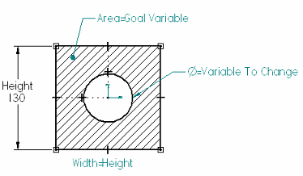
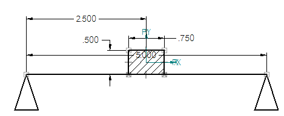
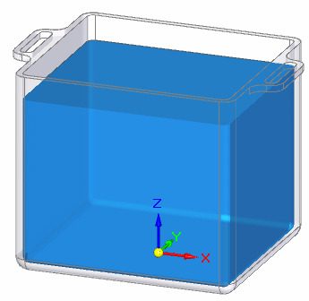
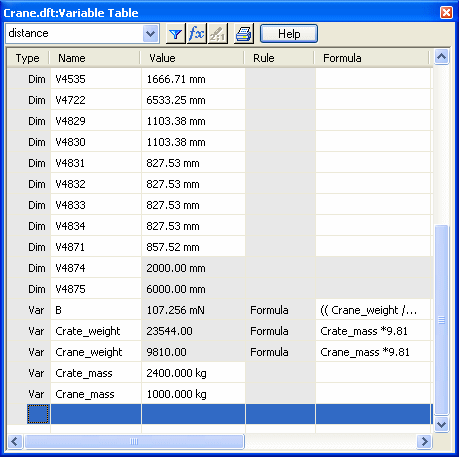

Using goal seeking in calculations
Overview of goal seeking
The Goal Seek command automates engineering calculations to achieve a specific design goal. It operates on driven and driving formulas, variables, and dimensions attached to 2D and 3D geometry. Goal seeking finds a specific value for a dependent variable (dependent by formula, for example) by adjusting the value of another variable until it returns the result you want. It shows you the effect on the geometry, and it updates the Variable Table with the new value.
You can use goal seeking to find the best solution to a what-if problem and use it to update:
-
A variable or dimension that controls 2D geometry on a drawing.
-
A variable or dimension on a profile sketch that controls changes to an ordered body in a part, sheet metal, or assembly model.
-
A physical property or PMI dimension that controls changes to a synchronous body in a part, sheet metal, or assembly model.
From a drawing or ordered sketch, you can:
-
Use the Goal Seek command along with the Area command to find the appropriate dimensions for geometry given a desired maximum area.

For more information, see Basic goal seeking workflow for 2D geometry section in the Goal Seek command topic.
-
Use the Goal Seek command to calculate the amount of force being applied at a point, given the lengths, weights, and dimensions of other elements in the design.

From an assembly model or a synchronous part or sheet metal model displayed in the graphics window, you can use the Goal Seek command to:
-
Find the center of mass on a bicycle to determine the required angle for the kick stand.
-
Reduce the weight of a part by changing the size of the holes cut into it.
For more information, see Reduce the weight of a part with goal seeking.

-
Find a volume by changing the size of the container.

For more information, see Find a volume with goal seeking.
If you are using web help, you can try a hands-on application of the goal seeking workflow. In the Solid Edge help window, you can select the site map icon to list all of the contents. Under Tutorials, look for Using Engineering Calculation Tools.
Goal seeking versus optimization
The Goal Seek command in Solid Edge and the Optimize command in Solid Edge Simulation are useful for solving different types of what-if problems.
Optimization refines the results of a structural analysis. For example, you can solve a linear static study and then optimize the geometry for stress, displacement, or factor of safety.
Optimization does not solve for a specific value. Instead, you choose a general quality that you want to optimize for, such as to minimize the weight of a part. You then choose a limit to maintain, for example, to maintain a stress level that is less than yield stress. The optimization process can adjust multiple variables to minimize the weight.
Goal seeking is more limited in scope. It is used primarily in what-if scenarios to adjust the design to match a specific value. Goal seeking changes the value of a single variable until the target value for the dependent goal variable is found.
Interaction with the Variable Table
System-generated variables, user-defined variables, and values are maintained in the Variable Table. The Variable Table defines functional relationships between the variables and dimensions of a design. When you create an area object with the Area command, a corresponding set of variables and current values are generated automatically in the Variable Table. Similarly, when you place a driving dimension on a sketch or profile element, a dimension variable and value are generated.
The Variable Table also contains all of the variables, values, and dimensions associated with the design of a model. This includes the sketches used to design parts, PMI dimensions used to control the size of parts, and all of the physical properties associated with the 3D model.
-
Dimensions that you add to the 2D and 3D geometry are also added automatically to the Variable Table.
-
When you add a dimension, you can choose the type of dimension you add—driving or driven—determines what you can solve for.
-
Area objects that you add to 2D geometry are added automatically to the Variable Table. All area object variables for area, perimeter, and coordinate systems are driven (dependent) variables.
-
Physical properties associated with a model are added automatically to the Variable Table.
-
You can type formulas directly in the Variable Table to reference any object variables and values.
You can open and review the Variable Table contents using the Tools tab→Variables command.
When reviewing or editing variable names and values through the Variable Table, you may need to know which variable name is associated with which dimension in the design. This is true especially when you are editing a design you are not familiar with, or if geometry and dimensions are placed on many different layers. With the Variable Table open, you can select a cell labeled Dim in the Type column, and then look in the graphics window for the highlighted dimension.

As you add dimensions to your design, you can change each system-generated variable name to a more logical name. When you rename variables, the variable name must begin with a letter, and it should contain only letters, numbers, and the underscore character. Do not use punctuation characters.
Displaying Variable Table data in callouts
You can show variables and values in your 2D design using annotations that reference the Variable Table through property text. In this example, property text in callouts reference weight and force values calculated for the crane, crate, and force.

You can extract property text from the Variable Table into a callout annotation using the Select Property Text dialog box and selecting Variables From Active Document as the property text source. For more information, see Extract Variable Table data using property text.